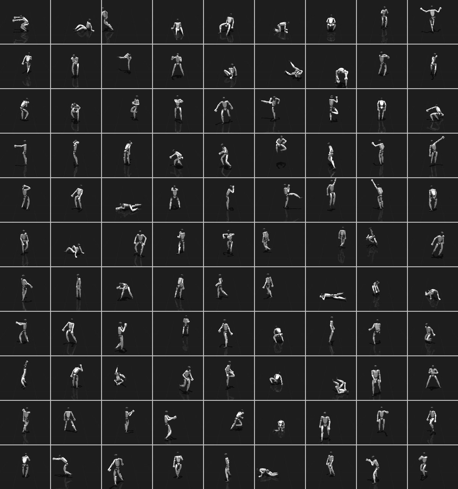
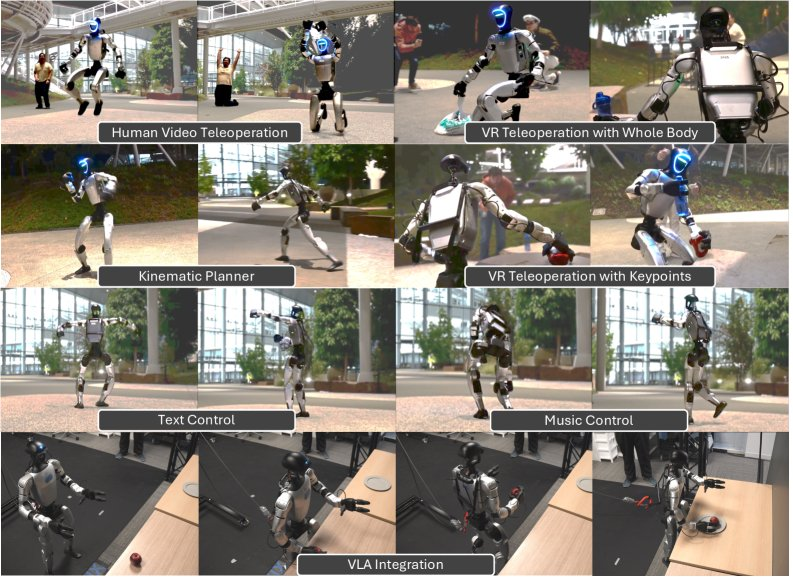
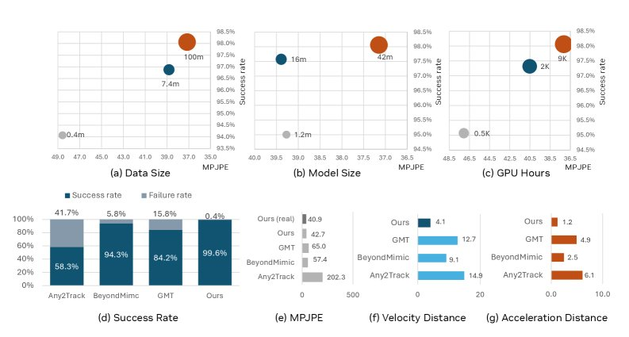
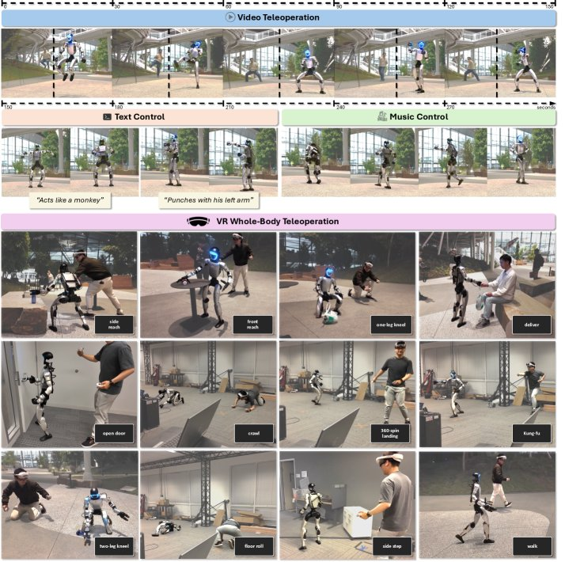
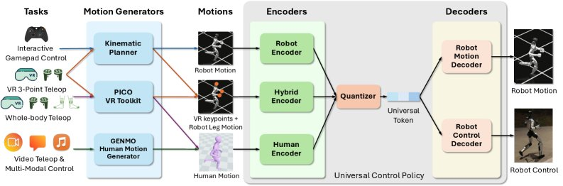

SONIC 阅读笔记
SONIC: Supersizing Motion Tracking for Natural Humanoid Whole-Body Control — Zhengyi Luo, Ye Yuan, Tingwu Wang, Chenran Li, Fernando Castañeda et al., NVIDIA, 2026
摘要
大语言模型靠堆 GPU、堆数据就能越来越强，但人形机器人的全身控制至今还没吃到这波 scaling 红利。现有方案网络太小（三层 MLP），数据太少，动作种类单一，换个任务就得重新调奖励函数。
SONIC 反其道而行，把动作跟踪（motion tracking）当成可规模化的基础任务。动捕数据天然提供逐帧稠密监督，不用手工设计奖励。作者沿三条轴线做 scaling：网络从 1.2M 扩到 42M 参数，数据从 4M 帧扩到 1 亿帧（700 小时动捕，50 fps），算力从 2K 扩到 21K GPU 小时（128 GPU 跑 7 天）。三条线同时推大，性能一路上升。
在此基础上，SONIC 还搭了两层上层建筑。第一层是实时运动学 planner，把速度、方向、风格这些高层指令转成短时运动参考。第二层是统一 token 空间，VR 遥操、视频遥操、文本/音乐控制、VLA 自主操作全部接到同一个控制策略里。最终在 Unitree G1 上跑通了走路、跑步、跳跃、爬行、拳击、跪蹲、抓取、踩踏板等各种全身行为。
一、Motivation
想象一下：你戴着 VR 头盔操控一台人形机器人，让它走到桌前、捡起苹果、放到盘子里。旁边有人在网页上打字 "act like a monkey"，机器人就学猴子蹦跶。又有人放了一首音乐，机器人跟着节拍跳舞。
这三件事，现在各要一套方案。遥操一套，文本控制一套，跳舞又一套。因为每个任务都得精心设计奖励函数，网络也只能针对单一行为训练。更麻烦的是，网络小、数据少，换个动作就得从头来。
作者的切入点很妙：语言模型和图像生成模型为什么强？因为它们找到了可规模化的基础训练任务。语言模型靠"预测下一个 token"，图像模型靠"去噪"。那人形机器人的基础任务是什么？
答案是动作跟踪（motion tracking）。动捕数据积累了几十年，量非常大，每一帧都有明确的"正确答案"，天然就是密集监督信号。把 motion tracking 当基础任务，就能像 GPT 一样沿数据、模型、算力三个维度做 scaling。
二、现存问题
1. 每个行为都要手工调奖励
走路要调一套奖励权重，跳舞再调一套，踩踏板又一套。这种"per-task reward engineering"让系统无法 scale，新增一个行为的边际成本几乎不变。
2. 对抗式模仿方法在大数据上崩溃
AMP、ASE、CALM 这类方法用判别器（discriminator，简单说就是一个"裁判"网络）区分真假动作。数据量和动作种类一大，判别器就越来越难判，训练信号不稳定，最终 mode collapse（模式坍缩），只学会少数几种动作。
3. 网络太小，泛化能力差
主流方案只用 3 层 MLP，参数百万级，几张 GPU 就能训完。这么小的网络，连训练集里的动作都覆盖不全，更别提泛化到没见过的动作了。
4. 上下游接口割裂
VR 遥操一套接口，视频遥操另一套，VLA 又另一套。每种输入模态都要单独的控制策略或额外的重定向管线（retargeting pipeline，把人体动作映射到机器人关节的流程），系统复杂度随模态数线性增长。
5. 跟踪评估标准不统一
之前的 tracker 多用"全局根位置误差 < 0.5m"来算成功。但这意味着机器人倒地了，只要身体还在附近也算"成功"。SONIC 改用局部姿态误差加末端执行器偏差来判断，更贴近真实的物理失败，比如摔倒就算失败。
四、方法详解

Figure 7: SONIC 系统架构总览。左侧是不同任务和对应的 motion generator，中间是三种编码器和量化器，右侧是两个解码器。
4.1 总体架构
SONIC 的核心思路一句话：多编码器 + 统一 token + 双解码器。
不同来源的运动指令（机器人关节数据、人体 SMPL 姿态、VR 稀疏关键点混合数据）各自进入对应的编码器，输出一个共享的 latent 向量。然后用 FSQ（有限标量量化）把它离散化成 universal token。最后两个解码器各司其职：robot control decoder 把 token 翻译成关节目标位置，robot motion decoder 重建运动轨迹做辅助监督。
4.2 三种编码器
- Robot encoder $\mathcal{E}_r$：吃未来 $F_r$ 帧的机器人关节位置和速度，间隔 $\Delta t_r$。信息最全，用于 gamepad 交互控制。
- Human encoder $\mathcal{E}_h$：吃未来 $F_h$ 帧的人体 SMPL 3D 关节位置，间隔 $\Delta t_h$。用于视频遥操和 multi-modal 控制（GEM 输出的就是人体运动）。
- Hybrid encoder $\mathcal{E}_m$：吃当前帧的上半身稀疏关键点（头部和双手）加下半身机器人运动，覆盖 $F_m$ 帧。专为 3-point VR 遥操设计（只有头盔和手柄，没有脚踝追踪器）。
三个编码器都是 MLP 结构，把各自的输入映射到同一个 latent 空间。
4.3 FSQ 量化器
latent 向量经 FSQ（Finite Scalar Quantization） 离散化为 universal token $z$。配置是 2 个 token，每个 $D_z$ 维，每维 $L_z$ 个量化级别。默认 FSQ-32-32，即 32 级量化、32 维。
为什么用 FSQ 而不用 VQ-VAE？两个原因：
- VQ-VAE 的 codebook 在动作类别极多（33 大类、8447 子类）时容易 codebook collapse，大量码字没被用到。
- FSQ 不需要 commitment loss，也不需要 EMA 更新，梯度直接通过 straight-through estimator 传回去，和 PPO 联合优化完全兼容。
4.4 双解码器
- Robot control decoder $\mathcal{D}_c$：输入 universal token $z$ 加本体感知状态 $s_t^P$，输出关节目标位置 $a_t$，经 PD 控制器驱动关节。
- Robot motion decoder $\mathcal{D}_r$：只吃 token $z$，重建机器人运动指令 $\hat{g}_r$，用来做辅助监督和跨编码器对齐。
4.5 训练损失
总损失由四项组成：
$$\mathcal{L} = \mathcal{L}_{\text{ppo}} + \mathcal{L}_{\text{recon}} + \mathcal{L}_{\text{token}} + \mathcal{L}_{\text{cycle}}$$四项损失端到端联合优化。用 asymmetric actor-critic 架构：critic 能看到全身线速度、全身姿态等特权信息，actor 只看本体感知和运动指令。梯度通过 FSQ 的 straight-through estimator 传回编码器。
4.6 运动学 Planner
Kinematic planner 是一个隐空间生成模型，和 tracker 共享同一份大规模动捕数据。它的工作是把用户的高层指令（速度、方向、风格）转成短时运动参考序列，交给 tracker 去执行。
规划过程在 token 空间进行。首先把连续运动编码成 token 序列（4 倍下采样）：
$$\{z_t\}_{t=1}^{T/4} = \text{enc}\left(\{p_t, r_t\}_{t=1}^T\right)$$然后用 masked token prediction 做 inbetweening（补帧）：给定起始和目标关键帧，网络迭代预测中间的 token。每次挑最高置信度的 token 固定下来，逐步细化：
$$h = \mathcal{F}\left(\{p_t, r_t\}_{t=1}^4,\ \{p_t, r_t\}_{t=T-4}^T,\ \{z_t\}_{t=1}^{T/4}\right)$$ $$\text{Prob}(z_t) = \sigma(h)$$根轨迹（位置和朝向）用一个临界阻尼弹簧模型（critically damped spring）平滑生成：
$$x(t) = \left(x_T - x_0 + \left(v_0 + \frac{c}{2}(x_T - x_0)\right)t\right)e^{-\frac{c}{2}t}$$Planner 推理很快，标准笔记本上不到 5ms，Jetson Orin 上 12ms。支持 0.8s 到 2.4s 的可变长度运动生成，自回归地不断刷新。
4.7 统一 Token 空间与多模态控制
所有运动最终都汇聚到同一个 universal token，所以可以接入任意 motion generator：
- Kinematic planner 输出机器人运动 → robot encoder → token
- VR 全身遥操输出 SMPL → human encoder → token
- VR 3-point 遥操输出稀疏关键点 + 机器人下半身 → hybrid encoder → token
- GEM (视频/文本/音乐) 输出人体运动 → human encoder → token
- VLA (GR00T N1.5) 直接预测 token → control decoder
换输入模态只需换 encoder，control decoder 不动，不用重新训练。
4.8 部署
部署在 Unitree G1（29 个电机关节）上，推理全部跑在机载 Jetson Orin GPU，用 TensorRT + CUDA Graph 加速。系统跑四个并发循环：策略推理 50 Hz，指令流 500 Hz，操作员输入 100 Hz，运动学规划 10 Hz。键盘、手柄、VR、网络等输入接口随便切换，只要换个 encoder 就行，不用重新训练。
五、实验结果

Figure 1: SONIC 通过一个通用控制策略支持多种输入模态和任务，包括视频遥操、VR 遥操、文本控制、音乐控制和 VLA 自主操作。
5.1 Scaling 实验

Figure 2: Scaling 曲线 (a-c)、与 baseline 对比 (d-g)、与专用控制器对比 (h-j)、sim-to-real (k-l)。
三条 scaling 轴线都在持续提升：
- 数据量：从 4M 帧到 100M 帧，test-content 成功率从约 98.9% 升到 99.6%，MPJPE-L 从约 27mm 降到 23.8mm。在 OOD（没见过的动作类别）上增益最大。
- 模型规模：从 1.2M 到 42M 参数，test-content 成功率从约 98.0% 升到 99.6%。最小模型 MPJPE-L 约 27.7mm，最大模型降到 23.8mm。
- 算力：从 2K 到 21K GPU 小时（16/32/128 GPU）。GPU 越多，相同迭代次数下渐近性能越好，因为更大的 batch size 让优化更稳定。
5.2 与其他 Motion Tracker 对比
统一 MuJoCo 评估协议下，SONIC 在 test-content / test-repetition / PHUMA 上的成功率分别是 98.7% / 99.6% / 97.0%。对比：
- BeyondMimic: 81.6% / 85.8% / 73.4%，MPJPE-L 39.1mm
- Any2Track: 31.1% / 38.4% / 58.6%
- GMT: Content / Repetition / PHUMA 上表现类似量级（详见 Fig. 2d-g）
SONIC 的 MPJPE-L 23.2mm，比 BeyondMimic 低 41%。在 PHUMA（外部数据集，68000 条动捕，retargeting pipeline 完全不同）上也拿到 97.0% 成功率，跨数据集泛化能力很强。
5.3 与专用控制器对比
和 OpenHomie（locomotion 专用控制器）在 0 到 5 m/s 速度跟踪上比较：SONIC 整体存活率 98.5%，OpenHomie 只有 43.0%。OpenHomie 超过 1.5 m/s 就暴跌到 20% 以下，SONIC 一直稳到 4 m/s。通用 tracker 加大数据量，确实能胜过专门调优的方案。
5.4 Sim-to-Real Transfer
123 条多样化运动序列实测，真机成功率 99.2%（仿真 100%）。整体 MPJPE-L：真机 25.7mm vs 仿真 22.3mm。上半身 sim-to-real gap 最小（22.2 vs 21.8mm），脚部最大（53.7 vs 29.0mm），因为真实地面的接触比仿真复杂得多。
5.5 VLA Loco-manipulation

Figure 5: VLA 驱动的 loco-manipulation 任务。(a) 苹果放盘子 (b) 胡萝卜抓取 (c) 毛刷抓取 (d) 踩踏板开垃圾桶 (e) 苏打罐扔垃圾桶 (f) 电钻装箱搬运
GR00T N1.5 VLA 预测 78 维动作（64 维 universal motion token + 14 维手部关节），经 SONIC 的 control decoder 驱动 G1 完成 5 项任务：
五项任务平均成功率 75%。最亮眼的是"苏打罐扔垃圾桶"：机器人要走到桌前抓罐子，走到垃圾桶旁，踩踏板开盖，把罐子扔进去。全程手脚要同时协调，传统分开控制上下半身的方案很难做到。
5.6 消融实验
FSQ Token vs SMPL Poses 作为 VLA 动作空间
VLA 直接预测 FSQ token 比预测 SMPL 姿态高 42 个百分点（68% vs 27%）。最复杂的"苏打罐扔垃圾桶"差距更大：FSQ 60% vs SMPL 0%。原因很直接：离散 token 是低维紧凑空间，VLA 更容易学。连续高维 SMPL 空间里，小误差会被放大成大幅度跟踪偏差。
FSQ vs VQ-VAE
128 GPU 训练下，FSQ 在 test-content 上 MPJPE-L 为 26.6mm，VQ-VAE 为 35.3mm，FSQ 低 8.7mm。
量化器配置
增大 token 维度比增加量化级别更有效。FSQ-32-32（默认配置）在所有指标上表现最优。
多编码器对齐
三种编码器都保持 >99.2% 成功率，human encoder 和 robot encoder 的 MPJPE-L 差距仅 0.6mm。一旦去掉 consistency loss，跨编码器距离暴涨 8 倍（Fig. 8: mean 0.57 vs 4.23）。

Figure 8: 有/无 consistency loss 时的 latent 空间对齐。(a-b) 对角 L2 距离，(c-d) 跨编码器距离矩阵。有 consistency loss 时匹配帧严格对齐，没有时对齐直接崩了。
六、总结
SONIC 证明了 motion tracking 可以作为人形机器人全身控制的基础任务来 scale。数据、模型、算力三个轴线同时推大，性能一直在涨，能泛化到没见过的动作，sim-to-real 迁移也很稳。
Kinematic planner 加 universal token 空间，把一个 motion tracker 变成了真正可用的系统。交互导航、遥操、多模态控制、VLA 自主操作，所有模态共享同一个控制策略。
局限性上，目前没有安全性和能效的形式化保证。极端动态运动或不合理指令下，tracker 还是可能失去平衡。
七、Insight
为什么 motion tracking 能 scale 而对抗式方法不行？ 关键在训练信号。Motion tracking 每一帧都有明确的目标姿态，数据越多信号越丰富。AMP/ASE 的判别器要区分"真实"和"生成"的动作分布，分布越复杂判别器越难判。这和 NLP 里"自回归预测 next token"胜过"GAN 生成文本"是一个道理：dense supervision 天然比 adversarial supervision 更适合 scaling。
Universal token 就是人形机器人的"API 接口层"。 传统方案的上下游接口是连续动作空间（关节角度、SMPL 姿态），维度高，模态间不兼容。FSQ token 把所有运动压缩到一个低维离散空间，等于给机器人的全身动作定义了一套"标准 API"。VLA 只需要学会调用这个 API（预测 64 维 token），不用管底层 29 个关节怎么转。
八、启发
对 VLA 研究的启发。 现在大多数 VLA 直接预测连续关节角度或末端执行器位姿。SONIC 证明离散 token 动作空间显著优于连续 SMPL 空间（+42pp），说明 VLA 也许不该直接预测原始动作，而该预测压缩后的 motion token。和 language modeling 用 discrete token 而非 continuous embedding 是一个逻辑。
对数据飞轮的启发。 SONIC 的数据链路是：动捕 → motion tracking → VR 遥操收集 → VLA 训练。遥操收的数据天然带 token 标注，不用额外标注。这就形成了一个自增强的飞轮：tracker 越好 → 遥操越稳 → VLA 数据越多 → VLA 越好 → 更多真实部署 → 更多数据。
对 humanoid foundation model 的启发。 42M 参数放今天看很小，但 SONIC 的 scaling 曲线还没明显饱和。继续推到更大网络和更多数据，humanoid control 也许会出现 LLM 式的涌现能力。
九、关键引用
"We show that scaling model capacity, data, and compute yields a generalist humanoid controller capable of natural, robust whole-body movements."
把模型、数据、算力同时做大，就能训出一个通用人形控制器，做出自然、鲁棒的全身运动。
"We position motion tracking as a scalable task for humanoid control, leveraging dense supervision from diverse motion-capture data to acquire human motion priors without manual reward engineering."
把动作跟踪作为人形控制的可规模化任务，靠多样化动捕数据的稠密监督来学习人体运动先验，完全跳过手工奖励设计。
"Each training frame provides an explicit target pose, so the learning signal remains informative as the dataset grows in size and diversity."
每一帧训练数据都有明确的目标姿态，数据集再大再杂，学习信号都不会失效。
"FSQ tokens outperform SMPL by +42 percentage points on average (68% vs. 27%), with the gap widening on complex tasks (60% vs. 0% on soda-can-to-trash-can)."
FSQ token 在 VLA 操控任务上平均比 SMPL 姿态高出 42 个百分点（68% vs 27%），在复杂任务上差距更大（苏打罐扔垃圾桶：60% vs 0%）。
"SONIC’s universal tracker achieves 98.5% survival versus OpenHomie’s 43.0%, showing that data diversity benefits a universal tracker more than specialization benefits a narrow one."
SONIC 通用跟踪器存活率 98.5%，OpenHomie 只有 43.0%。数据多样性对通用跟踪器的加成，远超专门优化对窄域控制器的加成。
十、Q&A
两个核心原因。第一，motion tracking 每帧都有明确的目标姿态，天然提供稠密监督。多任务 RL 则每个任务都要手工设计奖励函数，新增任务的成本不降，没法 scale。第二，人体动捕数据积累了几十年，走路、跑步、跳舞、格斗、工具使用什么都有，量天然就大。把这些数据统一用 motion tracking 消化，和用互联网文本训 LLM 一个道理。
Universal token 是 FSQ 量化后的离散表示。默认 2 个 token，每个 32 维，每维 32 个量化级别，总共 64 维离散向量（2 x 32 = 64）。它是三种编码器（robot/human/hybrid）的统一输出格式。不管输入来自机器人关节数据、人体 SMPL 姿态还是 VR 稀疏关键点，最终都压缩到这 64 维 token。VLA 模型直接预测 64 维 token + 14 维手部关节 = 78 维动作空间。
FSQ 好在三点。(1) 不会 codebook collapse：VQ-VAE 的 codebook 很容易大量码字闲置，动作种类越多（33 大类、8447 子类）越严重。(2) 不需要 commitment loss 和 codebook EMA 更新，训练更干净。(3) 梯度通过 straight-through estimator 直接传回，和 PPO 联合优化兼容性好。消融数据（Table 4a，128 GPU）：FSQ 在 test-content 上 MPJPE-L 26.6mm，VQ-VAE 35.3mm，FSQ 低 8.7mm。成功率 FSQ 99.3% vs VQ-VAE 98.7%。
标准笔记本上推理不到 5ms，Jetson Orin 上约 12ms。生成的运动片段 0.8s 到 2.4s，长度由模型自动决定。Planner 每 100ms 或用户指令更新时重规划一次。实际部署中，planner 跑在 10 Hz 循环，tracker 策略 50 Hz，指令流 500 Hz。
123 条测试运动，仿真成功率 100%，真机 99.2%。整体 MPJPE-L：仿真 22.3mm，真机 25.7mm，差 3.4mm。按部位看：上半身差距最小（21.8 vs 22.2mm，仅 0.4mm），下半身居中（24.8 vs 33.1mm），脚部最大（29.0 vs 53.7mm）。脚部差距大，因为真实地面的接触比仿真复杂得多。
非常重要。Consistency loss 包含 token 对齐损失和循环一致性损失。有它的时候，三种编码器之间平均 L2 距离 0.57；去掉后飙到 4.23，涨了约 8 倍（Figure 8）。从距离矩阵看，有 loss 时匹配帧严格对齐在对角线上，没有 loss 时对齐直接崩了。这个对齐对 VLA 下游很关键：VLA 训练时遥操数据可能来自不同编码器，它们必须映射到同一个 token 分布。
原始动捕约 700 小时。Retargeting 到 Unitree G1 后，过滤掉机器人物理上做不了的动作（爬楼梯、坐姿等），剩 611 小时训练数据，50 fps 采样后超过 1 亿帧。数据集覆盖 33 大类、8447 个子类：基础/高级运动、舞蹈（hip-hop、拉丁、vogue 等）、手势、格斗（剑术、武术、魔法等）、物体操控、工具使用、受伤步态、角色扮演等。训练集 317,189 条 clip。test-content 6,998 条（182 个全新子类），test-repetition 6,306 条（已知子类的新表演）。公开子集是 BONES-SEED（142,220 条，522 位演员）。
这个任务要串联 5 个技能：走到桌前抓罐子，走到垃圾桶旁，单脚踩踏板（另一只脚保持平衡），开盖子，扔罐子进去。每一步都要手脚协调加动态平衡。SMPL 直接预测 0%，原因是 SMPL 姿态是 81 维连续空间，VLA 预测的小误差会被 tracker 放大成严重的跟踪失败，尤其在需要精确脚步和平衡的场景下。FSQ token 是 64 维离散空间，误差不会连续放大，容错率高很多。
两层保护。第一层是 critically damped spring model：用户指令（速度、朝向）先经弹簧模型平滑，过滤掉突变指令（比如瞬间从 6 m/s 反向到 -6 m/s）。第二层是训练时的 domain randomization：训练阶段给运动指令加随机扰动，让策略对 planner 输出的噪声更鲁棒。不过作者也坦言，这些不构成形式化的安全保证。极端动态运动或严重超出训练分布的指令下，tracker 仍然可能摔倒。
从 Figure 2 看，三条轴线都还没明显饱和。数据轴在 100M 帧时曲线仍在涨，模型轴在 42M 时没有平台期，算力轴在 21K GPU 小时时还在持续改善。继续加大规模应该还有明显收益。42M 参数放 LLM 视角下极其微小（GPT-4 数千亿参数），humanoid control 的 scaling 故事可能才刚开头。